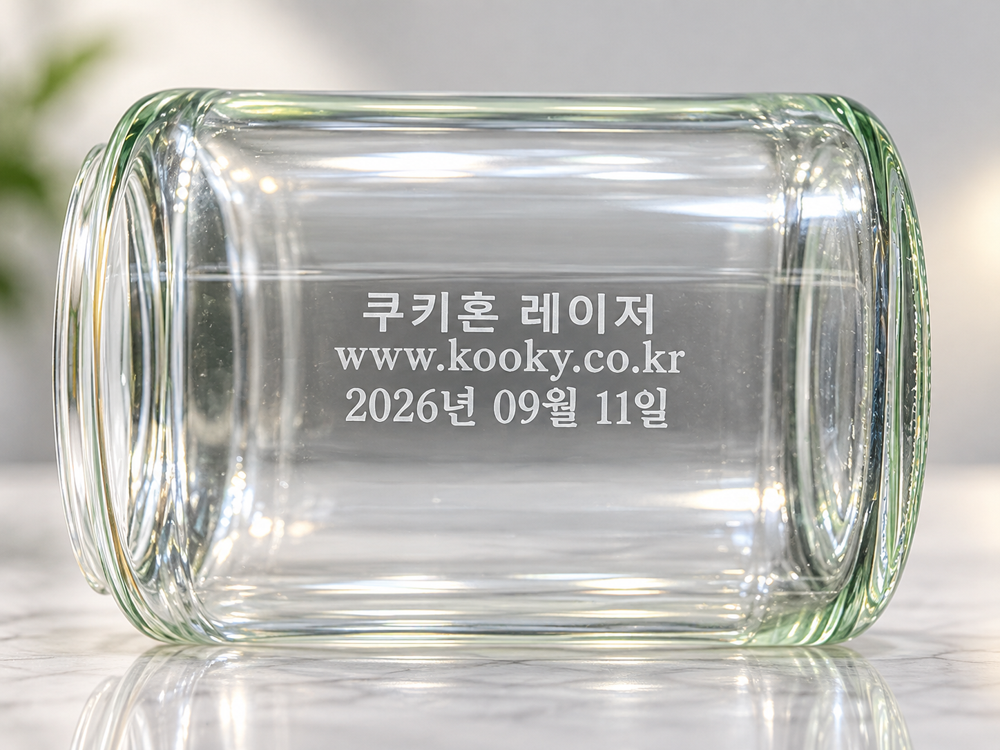
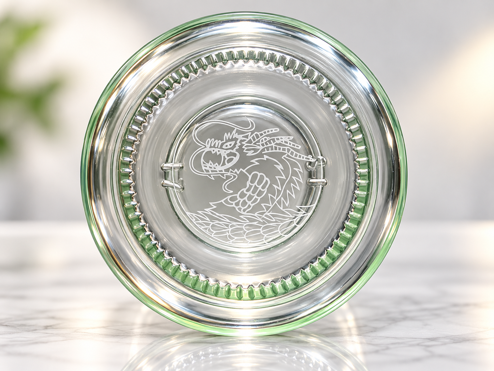

측면 문자 마킹
한글·웹주소·날짜 표기
곡면을 가진 유리 측면에 회사명, 웹주소와 날짜를 함께 마킹했습니다. 여러 크기의 문자가 균형 있게 표현되는지 확인할 수 있습니다.
같은 투명 유리 용기의 측면과 바닥면에 서로 다른 내용을 레이저로 마킹했습니다. 글자부터 복잡한 선 문양까지 유리 위에서 어떻게 표현되는지 편하게 살펴보세요.

곡면을 가진 유리 측면에 회사명, 웹주소와 날짜를 함께 마킹했습니다. 여러 크기의 문자가 균형 있게 표현되는지 확인할 수 있습니다.

같은 제품의 바닥면에는 가는 선이 많은 용 문양을 마킹했습니다. 문자뿐 아니라 로고와 장식 문양도 적용할 수 있는지 살펴본 샘플입니다.
유리의 두께, 곡률과 마킹 위치에 따라 초점과 표현 결과가 달라질 수 있습니다.
작은 글자와 복잡한 문양은 선 간격과 크기를 함께 검토해야 합니다.
실제 제품으로 외관, 균열 여부와 필요한 가독성을 확인한 뒤 조건을 선정합니다.